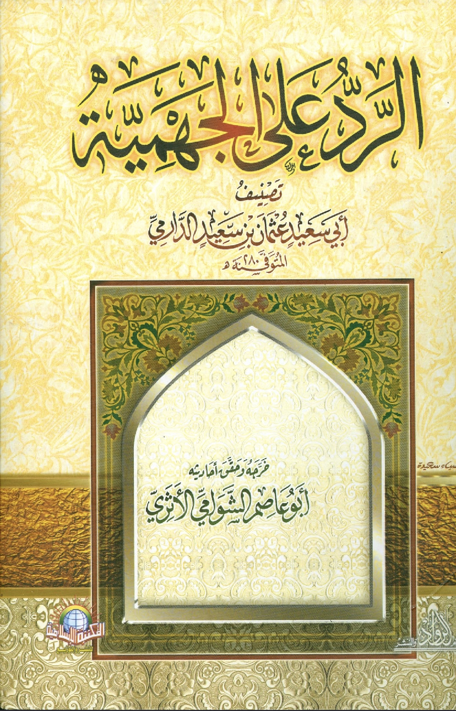
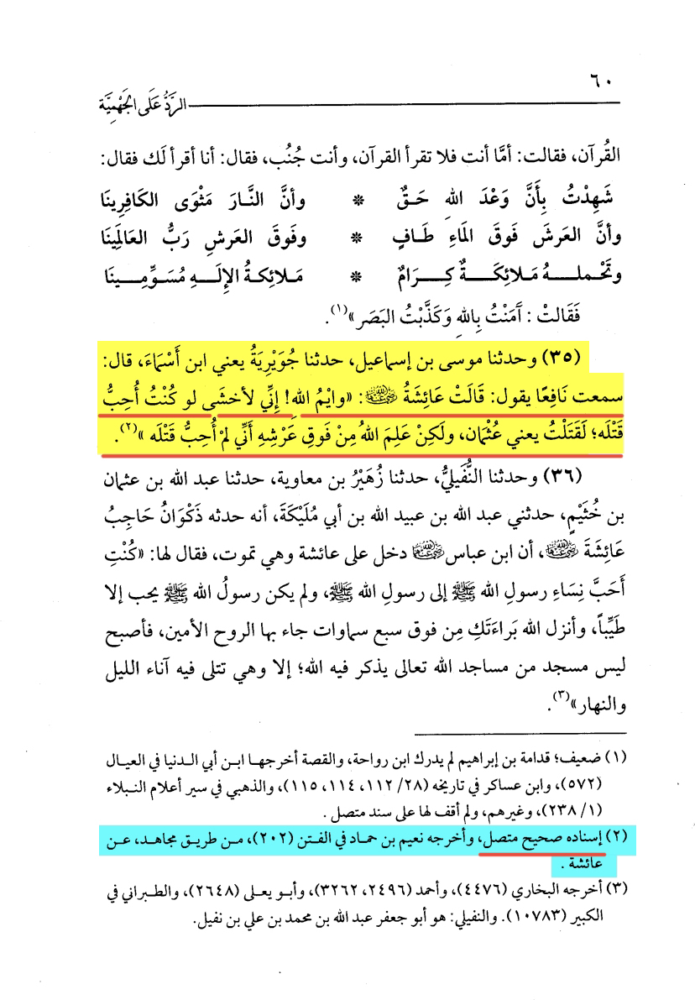
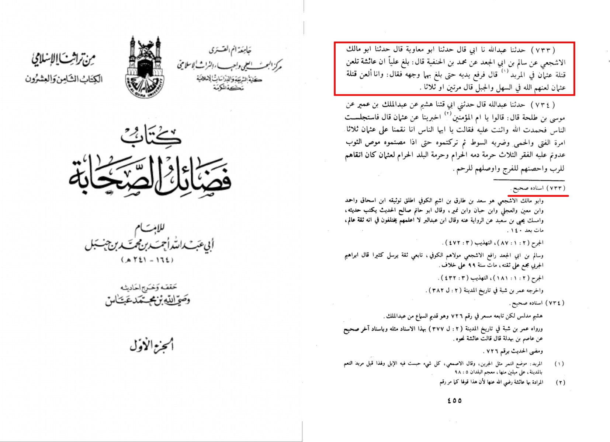

Our mother ‘Aisha (Peace be upon her) said: By Allah, I fear that if I were to want him (i.e ‘Uthmān)
to be killed, then I would be killed. But Allah knows from above His Throne that I did not want him
i.e ‘Uthmān) to be killed. In Al Radd ‘Ala Al-Jahmiyyah narration number 35 page 60
Ali was told that Aisha is cursing the killers of Uthman in al Marbad So he lifted his hands until they
reached his face and said: “And I curse the killers of Uthman, may Allah curse them in the valleys and
the mountains” he said it two or three times.
